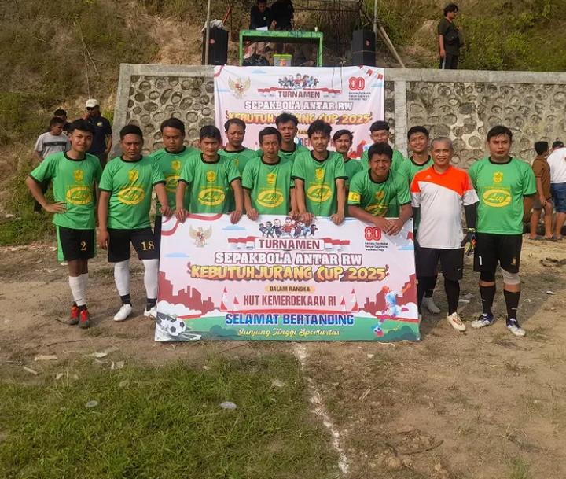
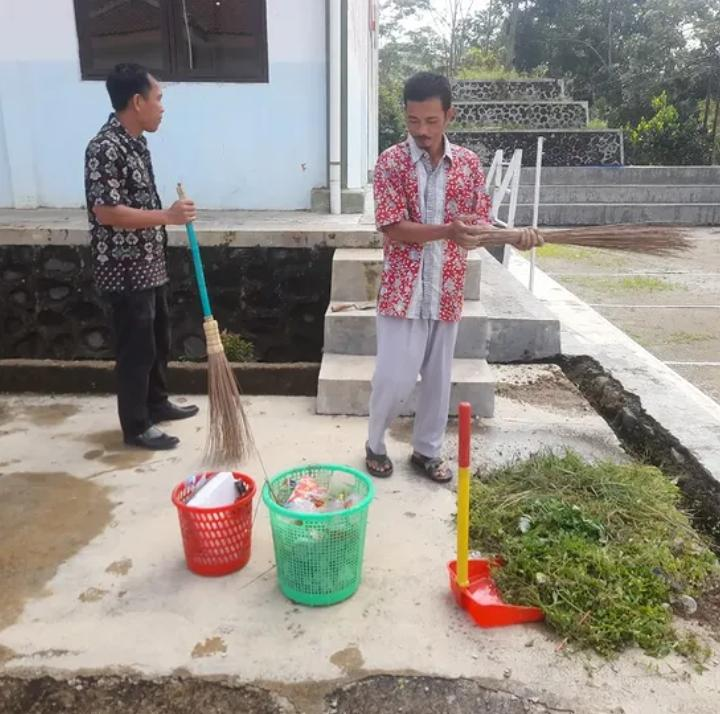
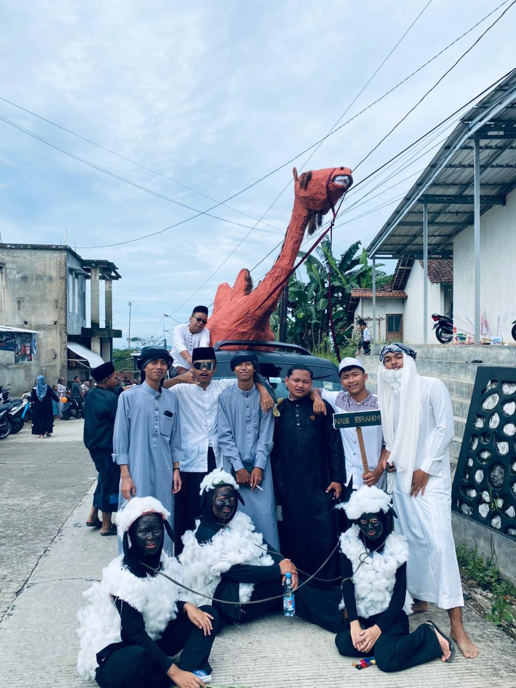
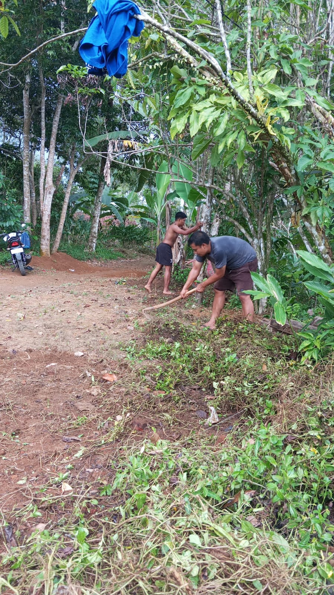
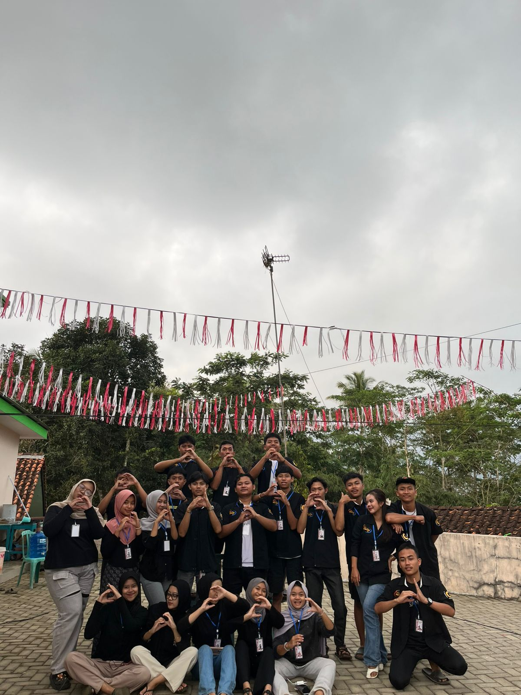

Profil Desa
Sejarah DesaDesa Kebutuhjurang sebagai wilayah pegunungan dengan lokasi paling selatan di kabupaten banjarnegara berbatasan langsung dengan kabupaten kebumen dengan mayoritas kehidupan penduduk bermata pencaharian sebagai petani.
Di kota Banjarnegara terjadi kekacauan yang diakibatkan oleh penjajah Belanda yaitu kota Banjarnegara di bom oleh penjajah Belanda sehingga masyarakat kota mencari tempat berlindung, demi untuk mencari keselamatan penduduk kota Banjarnegara menyelamatkan diri ke arah selatan berlindung di hutan dan disana terdapat penduduk yang mayoritas kehidupannya sebagai petani, atas dasar tersebut mereka beranggapan bahwa hutan ini merupakan sebagai lokasi yang sangat membantu masyarakat kota pada waktu itu sebagai tempat berlindung, mencari nafkah dan mereka berlindung dari musuh. Atas dasar tersebut diatas maka wilayah ini diberi nama.
Wilayah ini diberi nama kebutuh dikarenakan wilayah ini sebagai pusat segala kebutuhan bagi masyarakat kota pada waktu itu. Dikarenakan di wilayah ini terlalu luas maka wilayah ini dibagi 2 desa yaitu Desa Kebutuhjurang dan Kebutuhduwur.
Visi
Menuju KebutuhJurang Maju, Sejahtera dan Bermanfaat
Misi
a. Peningkatan sarana prasarana infrastruktur lingkungan dan pemerintah desa
b. Peningkatan ekonomi masyarakat demi tercapainya masyarakat sejahtera
c. Menuju masyarakat berbudaya, religius untuk keadilan dan kemakmuran
Struktur Organisasi Desa
KEPALA DESA
SUJARWO
SEKRETARIS DESA
AHMAD SUTARNO
KAUR TU DAN UMUM
FAJAR
KAUR KEUANGAN
MASKUR
KAUR PERENCANAAN
KHAYUL TAUFIQ HIDAYAT
KASI PEMERINTAHAN
HENDRA AGUS P
KASI PELAYANAN
ISWANDI NISWAN
KASI KESEJAHTERAAN
ALI HUSNA HILALUDIN
KADUS 1
MARON
AHMAD KHAMIDIN
KADUS 2
KARANG TENGAH
FAJAR
KADUS 3
BELOKAN
SAIFULLOH
KADUS 4
SIRONGGE
MISNO
Statistik Penduduk Desa
Statistik Usia
Statistik Pekerjaan
Statistik Pendidikan
Daftar UMKM Desa
Galeri Kegiatan Desa

Turnamen Sepak Bola Antar RW Kebutuh Jurang Cup 2025

Kegiatan Kerja Bakti dan Bersih Lingkungan Desa

Pawai dan Kegiatan Kemerdekaan Desa

Gotong Royong Membersihkan Jalan Desa

Acara HUT RI ke-80 di Desa Kebutuh Jurang Dusun Maron

Latihan pensi untuk persiapan HUT RI Desa Kebutuh Jurang

Pentas seni tari nusantara saat HUT RI Desa Kebutuh Jurang